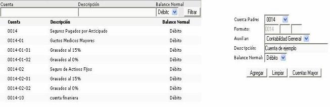

Soluciones Integrales S.A. Sistema Financiero Integral
Para realizar la creación de una subcuenta seleccione una cuenta padre y cuenta una auxiliar. Ingrese además una descripción y seleccione un balance normal. Posteriormente haga click en el botón "Agregar".

Figura 1. Catálogo de Subcuentas.